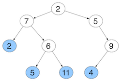
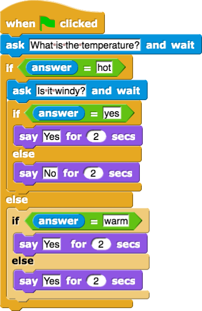

4
Reminder: A leaf is a node without any children. Therefore, the leaves in the above tree would be:
False
A decision tree has the nodes as attributes and edges as conditions. Whether you follow an edge depends on what the condition of the situation you are considering is. For example, if you had a node that had an attribute of "Shirt Colour" with outgoing edges labeled "Blue", "Red", and "Yellow", which edge you follow to the next node would depend on your current shirt colour (i.e., it is conditional).
False.
The following conditions must be met in order for a data structure to be considered as a rooted tree:
True.
The following conditions must be met in order for a data structure to be considered as a rooted tree:
| Colour | Height | Stripes | Texture | Poisonous? |
|---|---|---|---|---|
| Purple | Tall | Yes | Rough | Yes |
| Purple | Tall | Yes | Smooth | Yes |
| Red | Short | Yes | Hairy | No |
| Blue | Short | No | Smooth | No |
| Blue | Short | Yes | Hairy | Yes |
| Red | Tall | No | Hairy | No |
| Blue | Tall | Yes | Smooth | Yes |
| Blue | Short | Yes | Smooth | Yes |
| Blue | Tall | No | Hairy | No |
| Blue | Short | Yes | Rough | Yes |
| Red | Short | No | Smooth | No |
| Purple | Short | No | Hairy | Yes |
| Red | Tall | Yes | Hairy | No |
| Purple | Tall | Yes | Hairy | Yes |
| Purple | Tall | No | Rough | No |
| Purple | Tall | No | Smooth | No |
| Purple | Red | Blue |
|---|---|---|
| Yes | No | No |
| Yes | No | Yes |
| Yes | No | Yes |
| Yes | No | Yes |
| No | No | |
| No | Yes |
| Short | Tall |
|---|---|
| No | Yes |
| No | Yes |
| Yes | No |
| Yes | Yes |
| Yes | No |
| No | No |
| Yes | Yes |
| No | |
| No |
| Yes | No |
|---|---|
| Yes | No |
| Yes | No |
| No | No |
| Yes | No |
| Yes | Yes |
| Yes | No |
| Yes | No |
| No | |
| Yes |
| Rough | Smooth | Hairy |
|---|---|---|
| Yes | Yes | No |
| Yes | No | Yes |
| No | Yes | No |
| Yes | No | |
| No | Yes | |
| No | No | |
| Yes |
False. There is no root node in this structure.
True. A leaf node has no children. In this tree, the four leaf nodes would be 12, 16, 23 (the one closer to the bottom of the tree), and 41.
| Using Phone | Lights | Speed | Driving | Pull Over? |
|---|---|---|---|---|
| Yes | Working | Slow | Risky | No |
| No | Burnt out | Fast | Hazardous | Yes |
| No | Burnt out | Slow | Safe | Yes |
| No | Working | Fast | Risky | No |
| Yes | Working | Normal | Hazardous | No |
| Yes | Working | Fast | Hazardous | Yes |
| No | Burnt out | Slow | Safe | Yes |
| Yes | Burnt out | Fast | Risky | Yes |
| No | Working | Normal | Safe | No |
| Yes | Burnt out | Normal | Risky | Yes |
| Yes | Burnt out | Slow | Risky | Yes |
| No | Working | Slow | Safe | No |
| No | Burnt out | Slow | Risky | Yes |
| Yes | Working | Normal | Safe | No |
| No | Working | Normal | Risky | No |
| No | Working | Slow | Hazardous | Yes |
| No | Working | Fast | Safe | No |
A is right. chosing to reduce entropy will make the decision tree easier to work on and simpler.
B is wrong because the more you reduce the entropy, the higher the information gain.
C is wrong because in decision tree, the nodes are attributes and the edges are conditions.
D is wrong because we should make the resulting groups more homogeneous when we split the decision tree. it will make the decision tree simpler and easier to observe, thus reducing the work that we have to do.
E is wrong because reduce entropy is better than enlarge entropy. reduce entropy will make it easier to make and observe, while enlarge entropy will make it more complicated since we have to observe more nodes and edges in the decision tree.
False windy weather had 3 yes's and 2 no's. True windy weather had 2 yes's and 5 no's. False sunny weather has 1 yes and 3 no's. True sunny weather has 4 yes's and 4 no's.
Which type of weather has the most entropy?
The entropy is the amount of disorder:
| Temperature | Mood | Windy | Run? |
|---|---|---|---|
| Hot | Ambivalent | No | No |
| Hot | Happy | Yes | Yes |
| Warm | Happy | Yes | Yes |
| Warm | Bad | No | Yes |
| Warm | Ambivalent | No | Yes |
| Hot | Happy | No | No |
| Cold | Happy | No | Yes |
No. We only ask if it is windy if the temperature is hot.
